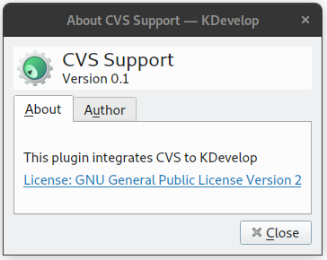
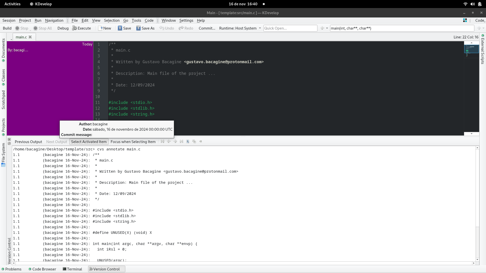

Meu Fork do Plugin de Integração do CVS para o KDevelop
Publicado em 22 de fevereiro de 2025
Este artigo é destinado para desenvolvedores que tem a necessidade de integrar o CVS com o KDevelop.
Sei que o CVS não é muito usado em nossos dias para controle de versionamento de códigos, mas eu trabalho em uma empresa que utiliza o CVS para controle de versionamento, então por conta disso decidi escrever este artigo para o caso de mais alguém se encontrar em uma situação semelhante.
Juntamente com o CVS, usamos a IDE KDevelop versão 4 que contem um plugin que realiza a integração do CVS com o KDevelop. Este facilita nosso trabalho pois com ele nós podemos ver quem commitou determinado trecho de um código sem precisar abrir outra aplicação (como o Cervisia por exemplo) para ver as modificações nos fontes que estamos analisando. Ao usar uma versão atualizada do KDevelop (versão 5), percebi que nele não havia mais o plugin do CVS; após pesquisar descobri que o plugin foi descontinuado em 2018 pelos desenvolvedores do KDevelop e eles apagaram o código do seu repositorio oficial (você poderá obter essa informação neste link Entrei no Gitlab do projeto e encontrei o commit em que foi excluido o código fonte do plugin, fiz uma copia do código e criei um fork em meu github Espero que o fork desse plugin possa ser util para outros desenvolvedores que usam o CVS e o KDevelop. Veja a seguir um exemplo de uso do plugin:
